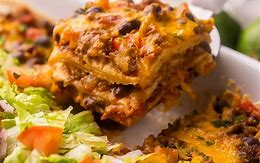

Taco Casserole

A fun, layered dish that combines Mexican flavors in a beginner-friendly way
Ingridients
- Ground beef
- onio
- taco seasoning
- black beans
- Corn
- salsa
- tortilla chips
- Mexican cheese
Ordered to do list
- pre heat oven to 180 degreese
- cook ground beef in a skillet until browned
- add onion and sauce until soften
- stir in taco seasoning, black beans, corn and salsa
- laeyer tortilla chips in the bottom of baking dish
- spread beef mixture evenly over the chips
- top with shredded cheese
- bake uncovered for 20-25 minutes until cheese is melted and bubbly
- cool slightly before serving
Home